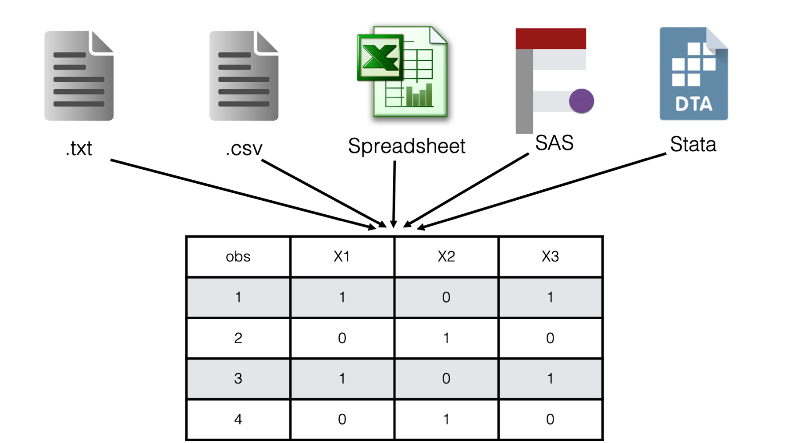

14 Importing Plain Text Files
We previously learned how to manually create a data frame in RStudio with the data.frame() function, the tibble() function, or the tribble() function. This will get the job done, but it’s not always very practical – particularly when you have larger data sets.
Additionally, others will usually share data with you that is already stored in a file of some sort. For our purposes, any file containing data that is not an R data frame is referred to as raw data. In my experience, raw data is most commonly shared as CSV (comma separated values) files or as Microsoft Excel files. CSV files will end with the .csv file extension and Excel files end with the .xls or .xlsx file extensions. But remember, generally speaking R can only manipulate and analyze data that has been imported into R’s global environment. In this lesson, you will learn how to take data stored in several different common types of files import them into R for use.
There are many different file types that one can use to store data. In this book, we will divide those file types into two categories: plain text files and binary files. Plain text files are simple files that you (a human) can directly read using only your operating system’s plain text editor (i.e., Notepad on Windows or TextEdit on Mac). These files usually end with the .txt file extension – one exception being the .csv extension. Specifically, in this chapter we will learn to import the following variations of plain text files:
Plain text files with data delimited by a single space.
Plain text files with data delimited by tabs.
Plain text files stored in a fixed width format.
Plain text files with data delimited by commas - csv files.
Later, we will discuss importing binary files. For now, you can think of binary files as more complex file types that can’t generally be read by humans without the use of special software. Some examples include Microsoft Excel spreadsheets, SAS data sets, and Stata data sets.
14.1 Packages for importing data
Base R contains several functions that can be used to import plain text files; however, I’m going to use the readr package to import data in the examples that follow. Compared to base R functions for importing plain text files, readr:
Is roughly 10 times faster.
Doesn’t convert character variables to factors by default.
Behaves more consistently across operating systems and geographic locations.
If you would like to follow along, I suggest that you go ahead and install and load readr now.
library(readr)14.2 Importing space delimited files
We will start by importing data with values are separated by a single space. Not necessarily because this is the most common format you will encounter; in my experience it is not. But it’s about as simple as it gets, and other types of data are often considered special cases of files separated with a single space. So, it seems like a good place to start.
Note
In programming lingo, it is common to use the word delimited interchangeably with the word separated. For example, you might say “values separated by a single space†or you might say “a file with space delimited values.â€
For our first example we will import a text file with values separated by a single space. The contents of the file are the now familiar height and weight data.
You may click here to download this file to your computer.
single_space <- read_delim(
file = "single_delimited.txt",
delim = " "
)Rows: 4 Columns: 4
── Column specification ────────────────────────────────────────────────────────
Delimiter: " "
chr (3): id, sex, ht_in
dbl (1): wgt_lbs
ℹ Use `spec()` to retrieve the full column specification for this data.
ℹ Specify the column types or set `show_col_types = FALSE` to quiet this message.single_space# A tibble: 4 × 4
id sex ht_in wgt_lbs
<chr> <chr> <chr> <dbl>
1 001 Male 71 190
2 002 Male . 176
3 003 Female 64 130
4 004 Female 65 154👆Here’s what we did above:
We used
readr’sread_delim()function to import a data set with values that are delimited by a single space. Those values were imported as a data frame, and we assigned that data frame to the R object calledsingle_space.You can type
?read_deliminto your R console to view the help documentation for this function and follow along with the explanation below.The first argument to the
read_delim()function is thefileargument. The value passed to the file argument should be a file path that tells R where to find the data set on your computer.The second argument to the
read_delim()function is thedelimargument. The value passed to thedelimargument tells R what character separates each value in the data set. In this case, a single space separates the values. Note that we had to wrap the single space in quotation marks.The
readrpackage imported the data and printed a message giving us some information about how it interpreted column names and column types. In programming lingo, deciding how to interpret the data that is being imported is called parsing the data.By default,
readrwill assume that the first row of data contains variable names and will try to use them as column names in the data frame it creates. In this case, that was a good assumption. We want the columns to be namedid,sex,ht_in, andwgt_lbs. Later, we will learn how to override this default behavior.By default,
readrwill try to guess what type of data (e.g., numbers, character strings, dates, etc.) each column contains. It will guess based on analyzing the contents of the first 1,000 rows of the data. In this case,readr’s guess was not entirely correct (or at least not what we wanted).readrcorrectly guessed that the variablesidandsexshould be character variables, but incorrectly guessed thatht_inshould be a character variable as well. Below, we will learn how to fix this issue.
Warning
Make sure to always include the file extension in your file paths. For example, using “/single_delimited†instead of “/single_delimited.txt†above (i.e., no .txt) would have resulted in an error telling you that the filed does not exist.
14.2.1 Specifying missing data values
In the previous example, readr guessed that the variable ht_in was a character variable. Take another look at the data and see if you can figure out why?
Did you see the period in the third value of the third row? The period is there because this value is missing, and a period is commonly used to represent missing data. However, R represents missing data with the special NA value – not a period. So, the period is just a regular character value to R. When R reads the values in the ht_in column, it decides that it can easily turn the numbers into character values, but it doesn’t know how to turn the period into a number. So, the column is parsed as a character vector.
But as we said, this is not what we want. So, how do we fix it? Well, in this case, we will simply need to tell R that missing values are represented with a period in the data we are importing. We do that by passing that information to the na argument of the read_delim() function:
single_space <- read_delim(
file = "single_delimited.txt",
delim = " ",
na = "."
)Rows: 4 Columns: 4
── Column specification ────────────────────────────────────────────────────────
Delimiter: " "
chr (2): id, sex
dbl (2): ht_in, wgt_lbs
ℹ Use `spec()` to retrieve the full column specification for this data.
ℹ Specify the column types or set `show_col_types = FALSE` to quiet this message.single_space# A tibble: 4 × 4
id sex ht_in wgt_lbs
<chr> <chr> <dbl> <dbl>
1 001 Male 71 190
2 002 Male NA 176
3 003 Female 64 130
4 004 Female 65 154👆Here’s what we did above:
By default, the value passed to the
naargument of theread_delim()function isc("", "NA"). This means that R looks for nothing (i.e., a value should be there but isn’t - this really doesn’t make sense when the delimiter is a single space) or anNA.We told R to look for a period to represent missing data instead of a nothing or an
NAby passing the period character to thenaargument.It’s important to note that changing the value of the
naargument does not change the way R represents missing data in the data frame that is created. It only tells R how to identify missing values in the raw data that we are importing. In the R data frame that is created, missing data will still be represented with the specialNAvalue.
14.3 Importing tab delimited files
Sometimes you will encounter plain text files that contain values separated by tab characters instead of a single space. Files like these may be called tab separated value or tsv files, or they may be called tab-delimited files.
To import tab separated value files in R, we use a variation of the same program we just saw. We just need to tell R that now the values in the data will be delimited by tabs instead of a single space.
You may click here to download this file to your computer.
tab <- read_delim(
file = "tab.txt",
delim = "\t"
)Rows: 4 Columns: 4
── Column specification ────────────────────────────────────────────────────────
Delimiter: "\t"
chr (2): id, sex
dbl (2): ht_in, wgt_lbs
ℹ Use `spec()` to retrieve the full column specification for this data.
ℹ Specify the column types or set `show_col_types = FALSE` to quiet this message.tab# A tibble: 4 × 4
id sex ht_in wgt_lbs
<chr> <chr> <dbl> <dbl>
1 001 Male 71 190
2 002 Male 69 176
3 003 Female 64 130
4 004 Female 65 154👆Here’s what we did above:
We used
readr’sread_delim()function to import a data set with values that are delimited by tabs. Those values were imported as a data frame, and we assigned that data frame to the R object calledtab.To tell R that the values are now separated by tabs, we changed the value we passed to the
delimargument to"\t". This is a special symbol that means “tab†to R.
I don’t personally receive tab separated values files very often. But, apparently, they are common enough to warrant a shortcut function in the readr package. That is, instead of using the read_delim() function with the value of the delim argument set to "\t", we can simply pass our file path to the read_tsv() function. Under the hood, the read_tsv() function does exactly the same thing as the read_delim() function with the value of the delim argument set to "\t".
tab <- read_tsv("tab.txt")Rows: 4 Columns: 4
── Column specification ────────────────────────────────────────────────────────
Delimiter: "\t"
chr (2): id, sex
dbl (2): ht_in, wgt_lbs
ℹ Use `spec()` to retrieve the full column specification for this data.
ℹ Specify the column types or set `show_col_types = FALSE` to quiet this message.tab# A tibble: 4 × 4
id sex ht_in wgt_lbs
<chr> <chr> <dbl> <dbl>
1 001 Male 71 190
2 002 Male 69 176
3 003 Female 64 130
4 004 Female 65 15414.4 Importing fixed width format files
Yet another type of plain text file we will discuss is called a fixed width format or fwf file. Again, these files aren’t super common in my experience, but they can be sort of tricky when you do encounter them. Take a look at this example:
As you can see, a hallmark of fixed width format files is inconsistent spacing between values. For example, there is only one single space between the values 004 and Female in the fourth row. But, there are multiple spaces between the values 65 and 154. Therefore, we can’t tell R to look for a single space or tab to separate values. So, how do we tell R which characters (including spaces) go with which variable? Well, if you look closely you will notice that all variable values start in the same column. If you are wondering what I mean, try to imagine a number line along the top of the data:
This number line creates a sequence of columns across your data, with each column being 1 character wide. Notice that spaces are also considered a character with width just like any other. We can use these columns to tell R exactly which columns contain the values for each variable.
You may click here to download this file to your computer.
Now, in this case we can just use readr’s read_table() function to import this data:
fixed <- read_table("fixed_width.txt")
── Column specification ────────────────────────────────────────────────────────
cols(
id = col_character(),
sex = col_character(),
ht_in = col_double(),
wgt_lbs = col_double()
)Warning: 1 parsing failure.
row col expected actual file
1 -- 4 columns 5 columns 'fixed_width.txt'fixed# A tibble: 4 × 4
id sex ht_in wgt_lbs
<chr> <chr> <dbl> <dbl>
1 001 Male 71 190
2 002 Male 69 176
3 003 Female 64 130
4 004 Female 65 154👆Here’s what we did above:
We used
readr’sread_table()function to import data from a fixed width format file. Those values were imported as a data frame, and we assigned that data frame to the R object calledfixed.You can type
?read_tableinto your R console to view the help documentation for this function and follow along with the explanation below.By default, the
read_table()function looks for values to be separated by one or more columns of space.
However, how could you import this data if there weren’t always spaces in between data values. For example:
In this case, the read_table() function does not give us the result we want.
fixed <- read_table("fixed_width_no_space.txt")
── Column specification ────────────────────────────────────────────────────────
cols(
id = col_character(),
sex = col_double(),
ht_inwgt_lbs = col_double()
)Warning: 3 parsing failures.
row col expected actual file
1 -- 3 columns 4 columns 'fixed_width_no_space.txt'
3 -- 3 columns 2 columns 'fixed_width_no_space.txt'
4 -- 3 columns 2 columns 'fixed_width_no_space.txt'fixed# A tibble: 4 × 3
id sex ht_inwgt_lbs
<chr> <dbl> <dbl>
1 001Male 71 190
2 002Male 69 176
3 003Female64 130 NA
4 004Female65 154 NAInstead, it parses the entire data set as a single character column. It does this because it can’t tell where the values for one variable stop and the values for the next variable start. However, because all the variables start in the same column, we can tell R how to parse the data correctly. We can actually do this in a couple different ways:
You may click here to download this file to your computer.
14.4.1 Vector of column widths
One way to import this data is to tell R how many columns wide each variable is in the raw data. We do that like so:
fixed <- read_fwf(
file = "fixed_width_no_space.txt",
col_positions = fwf_widths(
widths = c(3, 6, 5, 3),
col_names = c("id", "sex", "ht_in", "wgt_lbs")
),
skip = 1
)Rows: 4 Columns: 4
── Column specification ────────────────────────────────────────────────────────
chr (2): id, sex
dbl (2): ht_in, wgt_lbs
ℹ Use `spec()` to retrieve the full column specification for this data.
ℹ Specify the column types or set `show_col_types = FALSE` to quiet this message.fixed# A tibble: 4 × 4
id sex ht_in wgt_lbs
<chr> <chr> <dbl> <dbl>
1 001 Male 71 190
2 002 Male 69 176
3 003 Female 64 130
4 004 Female 65 154👆Here’s what we did above:
We used
readr’sread_fwf()function to import data from a fixed width format file. Those values were imported as a data frame, and we assigned that data frame to the R object calledfixed.You can type
?read_fwfinto your R console to view the help documentation for this function and follow along with the explanation below.The first argument to the
read_fwf()function is thefileargument. The value passed to the file argument should be file path that tells R where to find the data set on your computer.The second argument to the
read_fwf()function is the thecol_positionsargument. The value passed to this argument tells R the width (i.e., number of columns) that belong to each variable in the raw data set. This information is actually passed to thecol_positionsargument directly from thefwf_widths()function. This is an example of nesting functions.- The first argument to the
fwf_widths()function is thewidthsargument. The value passed to thewidthsargument should be a numeric vector of column widths. The column width of each variable should be calculated as the number of columns that contain the values for that variable. For example, take another look at the data with the imaginary number line:
- The first argument to the
-
All of the values for the variable
idcan be located within the first 3 columns of data. All of the values for the variablesexcan be located within the next 6 columns of data. All of the values for the variableht_incan be located within the next 5 columns of data. And, all of the values for the variablewgt_lbscan be located within the next 3 columns of data. Therefore, we pass the vectorc(3, 6, 5, 3)to thewidthsargument. -
The second argument to the
fwf_widths()function is thecol_namesargument. The value passed to thecol_namesargument should be a character vector of column names.
- The third argument of the
read_fwf()function that we passed a value to is theskipargument. The value passed to theskipargument tells R how many rows to ignore before looking for data values in the raw data. In this case, we passed a value of one, which told R to ignore the first row of the raw data. We did this because the first row of the raw data contained variable names instead of data values, and we already gave R variable names in thecol_namesargument to thefwf_widths()function.
14.4.2 Paired vector of start and end positions
Another way to import this data is to tell R how which columns each variable starts and stops at in the raw data. We do that like so:
fixed <- read_fwf(
file = "fixed_width_no_space.txt",
col_positions = fwf_positions(
start = c(1, 4, 10, 15),
end = c(3, 9, 11, 17),
col_names = c("id", "sex", "ht_in", "wgt_lbs")
),
skip = 1
)Rows: 4 Columns: 4
── Column specification ────────────────────────────────────────────────────────
chr (2): id, sex
dbl (2): ht_in, wgt_lbs
ℹ Use `spec()` to retrieve the full column specification for this data.
ℹ Specify the column types or set `show_col_types = FALSE` to quiet this message.fixed# A tibble: 4 × 4
id sex ht_in wgt_lbs
<chr> <chr> <dbl> <dbl>
1 001 Male 71 190
2 002 Male 69 176
3 003 Female 64 130
4 004 Female 65 154👆Here’s what we did above:
This time, we passed column positions to the
col_positionsargument ofread_fwf()directly from thefwf_positions()function.- The first argument to the
fwf_positions()function is thestartargument. The value passed to thestartargument should be a numeric vector containing the first column that contains a value for each variable. For example, take another look at the data with the imaginary number line:
- The first argument to the
-
The first column that contains part of the value for the variable
idcan be located in column 1 of data. The first column that contains part of the value for the variablesexcan be located in column 4 of data. The first column that contains part of the value for the variableht_incan be located in column 10 of data. And, the first column that contains part of the value for the variablewgt_lbscan be located in column 15 of data. Therefore, we pass the vectorc(1, 4, 10, 15)to thestartargument. -
The second argument to the
fwf_positions()function is theendargument. The value passed to theendargument should be a numeric vector containing the last column that contains a value for each variable. The last column that contains part of the value for the variableidcan be located in column 3 of data. The last column that contains part of the value for the variablesexcan be located in column 9 of data. The last column that contains part of the value for the variableht_incan be located in column 11 of data. And, the last column that contains part of the value for the variablewgt_lbscan be located in column 17 of data. Therefore, we pass the vectorc(3, 9, 11, 17)to theendargument. -
The third argument to the
fwf_positions()function is thecol_namesargument. The value passed to thecol_namesargument should be a character vector of column names.
14.4.3 Using named arguments
As a shortcut, either of the methods above can be written using named vectors. All this means is that we basically combine the widths and col_names arguments to pass a vector of column widths, or we combine the start, end, and col_names arguments to pass a vector of start and end positions. For example:
Column widths:
read_fwf(
file = "fixed_width_no_space.txt",
col_positions = fwf_cols(
id = 3,
sex = 6,
ht_in = 5,
wgt_lbs = 3
),
skip = 1
)# A tibble: 4 × 4
id sex ht_in wgt_lbs
<chr> <chr> <dbl> <dbl>
1 001 Male 71 190
2 002 Male 69 176
3 003 Female 64 130
4 004 Female 65 154Column positions:
read_fwf(
file = "fixed_width_no_space.txt",
col_positions = fwf_cols(
id = c(1, 3),
sex = c(4, 9),
ht_in = c(10, 11),
wgt_lbs = c(15, 17)
),
skip = 1
)Rows: 4 Columns: 4
── Column specification ────────────────────────────────────────────────────────
chr (2): id, sex
dbl (2): ht_in, wgt_lbs
ℹ Use `spec()` to retrieve the full column specification for this data.
ℹ Specify the column types or set `show_col_types = FALSE` to quiet this message.# A tibble: 4 × 4
id sex ht_in wgt_lbs
<chr> <chr> <dbl> <dbl>
1 001 Male 71 190
2 002 Male 69 176
3 003 Female 64 130
4 004 Female 65 15414.5 Importing comma separated values files
The final type of plain text file that we will discuss is by far the most common type used in my experience. I’m talking about the comma separated values or csv file. Unlike space and tab separated values files, csv file names end with the .csv file extension. Although, csv files are plain text files that can be opened in plain text editors such as Notepad for Windows or TextEdit for Mac, many people view csv files in spreadsheet applications like Microsoft Excel, Numbers for Mac, or Google Sheets.
Importing standard csv files into R with the readr package is easy and uses a syntax that is very similar to read_delim() and read_tsv(). In fact, in many cases we only have to pass the path to the csv file to the read_csv() function like so:
You may click here to download this file to your computer.
csv <- read_csv("comma.csv")Rows: 4 Columns: 4
── Column specification ────────────────────────────────────────────────────────
Delimiter: ","
chr (1): sex
dbl (3): id, ht_in, wt_lbs
ℹ Use `spec()` to retrieve the full column specification for this data.
ℹ Specify the column types or set `show_col_types = FALSE` to quiet this message.csv# A tibble: 4 × 4
id sex ht_in wt_lbs
<dbl> <chr> <dbl> <dbl>
1 1 Male 71 190
2 2 Male 69 176
3 3 Female 64 130
4 4 Female 65 154👆Here’s what we did above:
We used
readr’sread_csv()function to import a data set with values that are delimited by commas. Those values were imported as a data frame, and we assigned that data frame to the R object calledcsv.You can type
?read_csvinto your R console to view the help documentation for this function and follow along with the explanation below.Like
read_tsv(), R is basically executing theread_delim()function with the value of thedelimargument set to","under the hood. You could also use theread_delim()function with the value of thedelimargument set to","if you wanted to.
14.6 Additional arguments
For the most part, the data we imported in all of the examples above was relatively well behaved. What I mean by that is that the data basically “looked†like each of the read_ functions were expecting it to “lookâ€. Therefore, we didn’t have to adjust many of the various read_ functions’ default values. The exception was changing the default value of the na argument to the read_delim() function. However, all of the read_ functions above have additional arguments that you may need to tweak on occasion. The two that I tend to adjust most often are the col_names and col_types arguments. It’s impossible for me to think of every scenario where you may need to do this, but I’ll walk through a basic example below, which should be sufficient for you to get the idea.
Take a look at this csv file for a few seconds. It started as the same exact height and weight data we’ve been using, but I made a few changes. See if you can spot them all.
When people record data in Microsoft Excel, they do all kinds of crazy things. In the screenshot above, I’ve included just a few examples of things I see all the time. For example:
Row one contains generic variable names that don’t really serve much of a purpose.
Row two is a blank line. I’m not sure why it’s there. Maybe the study staff finds it aesthetically pleasing?
Row three contains some variable descriptions. These are actually useful, but they aren’t currently formatted in a way that makes for good variable names.
Row 7, column D is a missing value. However, someone wrote the word “Missing†instead of leaving the cell blank.
Column E also contains some notes for the data collection staff that aren’t really part of the data.
All of the issues listed above are things we will have to deal with before we can analyze our data. Now, in this small data set we could just fix these issues directly in Microsoft Excel and then import the altered data into R with a simple call to read_csv() without adjusting any options. However, that this is generally a really bad idea.
Warning
I suggest that you don’t EVER alter your raw data. All kinds of crazy things happen with data and data files. If you keep your raw data untouched and in a safe place, worst case scenario you can always come back to it and start over. If you start messing with the raw data, then you may lose the ability to recover what it looked like in its original form forever. If you import the data into R before altering it then your raw data stays preserved
If you are going to make alterations in Excel prior to importing the data, I strongly suggest making a copy of the raw data first. Then, alter the copy before importing into R. But, even this can be a bad idea.
If you make alterations to the data in Excel then there is generally no record of those alterations. For example, let’s say you click in a cell and delete a value (maybe even by accident), and then send me the csv file. I will have no way of knowing that a value was deleted. When you alter the data directly in Excel (or any program that doesn’t require writing code), it can be really difficult for others (including future you) to know what was done to the data. You may be able manually compare the altered data to the original data if you have access to both, but who wants to do that – especially if the file is large? However, if you import the data into R as-is and programmatically make alterations with R code, then your R code will, by definition, serve a record of all alterations that were made.
Often data is updated. You could spend a significant amount of time altering your data in Excel only to be sent an updated file next week. Often, the manual alterations you made in one Excel file are not transferable to another. However, if all alterations are made in R, then you can often just run the exact same code again on the updated data.
So, let’s walk through addressing these issues together. We’ll start by taking a look at our results with all of read_csv’s arguments left at their default values.
You may click here to download this file to your computer.
csv <- read_csv("comma_complex.csv")New names:
Rows: 6 Columns: 5
── Column specification
──────────────────────────────────────────────────────── Delimiter: "," chr
(5): Var1...1, Var1...2, Var3, Var4, Notes
ℹ Use `spec()` to retrieve the full column specification for this data. ℹ
Specify the column types or set `show_col_types = FALSE` to quiet this message.
• `Var1` -> `Var1...1`
• `Var1` -> `Var1...2`csv# A tibble: 6 × 5
Var1...1 Var1...2 Var3 Var4 Notes
<chr> <chr> <chr> <chr> <chr>
1 <NA> <NA> <NA> <NA> <NA>
2 Study ID Participant Sex Paticipant Height (in) Participant Weight (lbs) <NA>
3 1 Male 71 190 <NA>
4 2 Male <NA> 176 <NA>
5 3 Female 64 130 <NA>
6 4 Female 65 Missing Call…That is obviously not what we wanted. So, let’s start adjusting some of read_csv()’s defaults – staring with the column names.
csv <- read_csv(
file = "comma_complex.csv",
col_names = c("id", "sex", "ht_in", "wgt_lbs")
)Rows: 7 Columns: 5
── Column specification ────────────────────────────────────────────────────────
Delimiter: ","
chr (5): id, sex, ht_in, wgt_lbs, X5
ℹ Use `spec()` to retrieve the full column specification for this data.
ℹ Specify the column types or set `show_col_types = FALSE` to quiet this message.# A tibble: 7 × 5
id sex ht_in wgt_lbs X5
<chr> <chr> <chr> <chr> <chr>
1 Var1 Var1 Var3 Var4 Notes
2 <NA> <NA> <NA> <NA> <NA>
3 Study ID Participant Sex Paticipant Height (in) Participant Weight (lbs) <NA>
4 1 Male 71 190 <NA>
5 2 Male <NA> 176 <NA>
6 3 Female 64 130 <NA>
7 4 Female 65 Missing Call…👆Here’s what we did above:
We passed a character vector of variable names to the
col_namesargument. Doing so told R to use the words in the character vector as column names instead of the values in the first row of the raw data (the default).Because the character vector of names only contained 4 values, the last column was dropped from the data. R gives us a warning message to let us know. Specially, for each row it says that it was expecting 4 columns (because we gave it 4 column names), but actually found 5 columns. We’ll get rid of this message next.
csv <- read_csv(
file = "comma_complex.csv",
col_names = c("id", "sex", "ht_in", "wgt_lbs"),
col_types = cols(
col_character(),
col_character(),
col_integer(),
col_integer(),
col_skip()
)
)Warning: One or more parsing issues, call `problems()` on your data frame for details,
e.g.:
dat <- vroom(...)
problems(dat)csv# A tibble: 7 × 4
id sex ht_in wgt_lbs
<chr> <chr> <int> <int>
1 Var1 Var1 NA NA
2 <NA> <NA> NA NA
3 Study ID Participant Sex NA NA
4 1 Male 71 190
5 2 Male NA 176
6 3 Female 64 130
7 4 Female 65 NA👆Here’s what we did above:
We told R explicitly what type of values we wanted each column to contain. We did so by nesting a
col_function for each column type inside thecol()function, which is passed directly to thecol-typesargument.You can type
?readr::colsinto your R console to view the help documentation for this function and follow along with the explanation below.Notice various column types (e.g.,
col_character()) are functions, and that they are nested inside of thecols()function. Because they are functions, you must include the parentheses. That’s just how thereadrpackage is designed.Notice that the last column type we passed to the
col_typesargument wascol_skip(). This tells R to ignore the 5th column in the raw data (5th because it’s the 5th column type we listed). Doing this will get rid of the warning we saw earlier.You can type
?readr::colsinto your R console to see all available column types.Because we told R explicitly what type of values we wanted each column to contain, R had to drop any values that couldn’t be coerced to the type we requested. More specifically, they were coerced to missing (
NA). For example, the valueVar3that was previously in the first row of theht_incolumn. It was coerced toNAbecause R does not know (nor do I) how to turn the character string “Var3†into an integer. R gives us a warning message about this.
Next, let’s go ahead and tell R to ignore the first three rows of the csv file. They don’t contain anything that is of use to us at this point.
csv <- read_csv(
file = "comma_complex.csv",
col_names = c("id", "sex", "ht_in", "wgt_lbs"),
col_types = cols(
col_character(),
col_character(),
col_integer(),
col_integer(),
col_skip()
),
skip = 3
)Warning: One or more parsing issues, call `problems()` on your data frame for details,
e.g.:
dat <- vroom(...)
problems(dat)csv# A tibble: 4 × 4
id sex ht_in wgt_lbs
<chr> <chr> <int> <int>
1 1 Male 71 190
2 2 Male NA 176
3 3 Female 64 130
4 4 Female 65 NA👆Here’s what we did above:
We told R to ignore the first three rows of the csv file by passing the value 3 to the
skipargument.The remaining warning above is R telling us that it still had to convert the word “Missing†to an
NAin the 4th row of thewgt_lbscolumn because it didn’t know how to turn the word “Missing†into an integer. This is actually exactly what we wanted to happen, but we can get rid of the warning by explicitly adding the word “Missing†to the list of values R looks for in thenaargument.
csv <- read_csv(
file = "comma_complex.csv",
col_names = c("id", "sex", "ht_in", "wgt_lbs"),
col_types = cols(
col_character(),
col_character(),
col_integer(),
col_integer(),
col_skip()
),
skip = 3,
na = c("", "NA", "Missing")
)csv# A tibble: 4 × 4
id sex ht_in wgt_lbs
<chr> <chr> <int> <int>
1 1 Male 71 190
2 2 Male NA 176
3 3 Female 64 130
4 4 Female 65 NAWow! This was kind of a long chapter! 🤯 But, you should now have the foundation you need to start importing data in R instead of creating data frames manually. At least as it pertains to data that is stored in plain text files. Next, we will learn how to import data that is stored in binary files. Most of the concepts we learned in this chapter will apply, but we will get to use a couple new packages 📦.